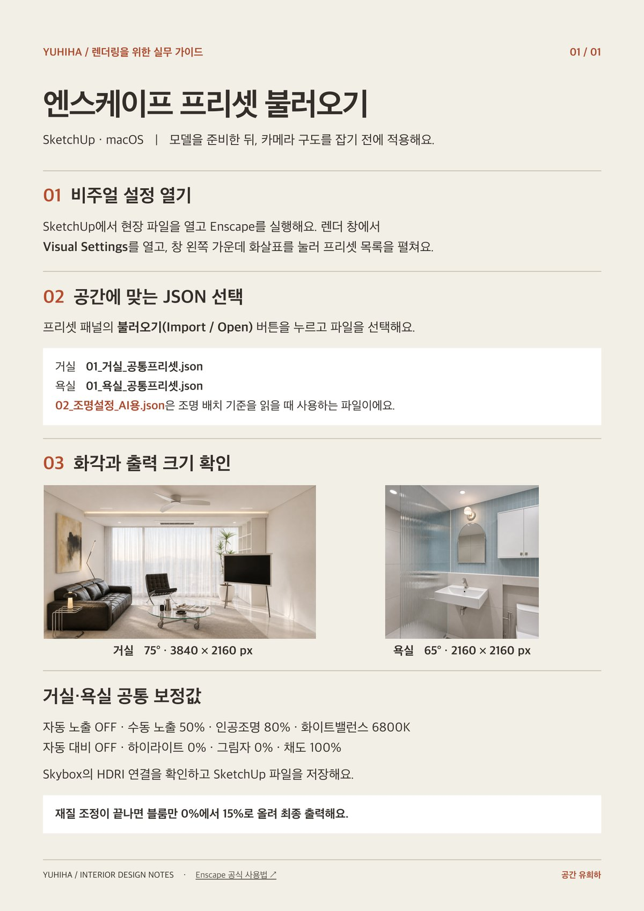

YUHIHA / RENDERING SETTINGS엔스케이프
엔스케이프
공간별 세팅값
릴스에서 보신 거실·욕실 세팅값이에요. 공간에 맞는 프리셋 JSON 하나만 불러오면 노출·색온도·화각·출력 크기를 다시 입력할 필요가 없어요. 작업을 시작할 때 프리셋을 먼저 넣고, 조명 기준 파일은 참고용으로 봐 주세요. HDRI와 한 장짜리 불러오기 가이드도 같이 담았어요.
세팅값 받기ZIP · 5.3MBPC에서 받아 주세요. 휴대폰에서는 압축 파일이 열리지 않을 수 있어요. 이 페이지 주소를 PC로 옮겨서 받으시면 편해요.
01들어 있는 것
- 01_거실_공통프리셋.json — 75° · 3840×2160 · 수동 노출 50% · 6800K
- 01_욕실_공통프리셋.json — 65° · 2160×2160 · 수동 노출 50% · 6800K
- 02_거실·욕실_조명설정_AI용.json — 참고용. 기구별 광량·색·검수 순서를 정리한 조명 기준
- HDR/white_cliff_top_2k.hdr — 프리셋에 쓰인 하늘 HDRI (Poly Haven, CC0)
- 엔스케이프_프리셋_설정가이드.pdf — 불러오는 순서 한 장 정리
02쓰는 법
- 모델과 조명 기구를 배치한 뒤, 뷰를 잡기 전에 Enscape를 실행해요.
- Visual Settings를 열고 왼쪽 가운데 화살표로 프리셋 목록을 펼쳐요.
- 불러오기(Import)로 작업할 공간의 01_…_공통프리셋.json을 선택해요.
- Atmosphere → Skybox에서 함께 드린 white_cliff_top_2k.hdr를 지정해요.
- 화각·출력 크기를 확인하고 SketchUp 파일을 저장하면, 다음부터 목록에서 바로 고를 수 있어요.
- 재질 조정이 끝나면 블룸만 0%에서 15%로 올려 최종 출력해요.
자세한 메뉴 위치는 Enscape 공식 안내를 참고해 주세요.
00이용 조건
- 개인 공부와 실무에 자유롭게 쓰실 수 있어요.
- 파일을 다른 곳에 올리거나 재배포·판매할 수 없어요.
- 강의·교육 자료로 쓰시려면 먼저 yuhiha4733@gmail.com으로 연락 주세요.
주변에 알려 주고 싶으시면 파일 대신 인스타 게시물을 공유해 주세요 🙏
03가이드 미리보기1쪽
